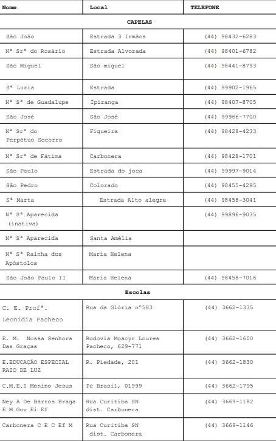
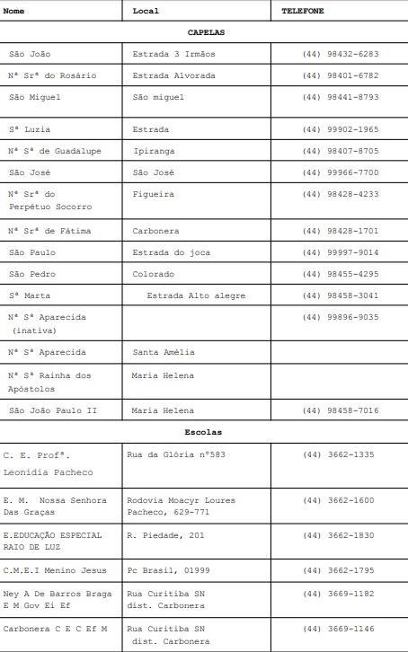

Ponto de entrega volúntaria no campo
Cuidar da Natureza hoje é pensar nas próximas gerações

A dos estudantes quanto à preservação ambiental é trabalhada constantemente nas escolas de Maria Helena-PR. Com o objetivo de formar cidadãos mais comprometidos em cuidar do planeta, a disciplina Matematica 2: programação de sites, através da Escola Estadual Leonídia Pacheco, desenvolveu um projeto de coleta de resíduos eletrônicos que foi além da sala de aula e envolve toda a comunidade escolar: o projeto Papa-Eletrônicos.
A iniciativa tem como objetivo minimizar os impactos ambientais causados pelo descarte incorreto dos resíduos eletrônicos, incentivando alunos, famílias e comunidade escolar a dar o destino adequado a esses materiais, que iriam para o lixo comum. Coletores de lixos identificados como “Papa-Eletrônicos” serão distribuídos nas unidades escolares e capelas da Igreja Católica na zona rural, a coleta será realizada pelo caminhão da Coleta Seletiva disponibilizado pela Secretaria de Meio Ambiente do munícípio de Maria Helena- PR que realizará o recolhimento e direcionamento às empresas licenciada a reciclagem.

Resíduos eletroeletrônicos consistem em equipamentos eletroeletrônicos descartados ou obsoletos. Estes resíduos possuem em sua composição metais perigosos como mercúrio, cádmio, chumbo, zinco-manganês e acalmo-manganês de difícil degradação, que podem ser causadores de graves problemas ambientais caso sejam descartados de modo incorreto. No Brasil, o Conselho Nacional de Meio Ambiente (Conama) regulamenta o descarte desses materiais.
Saiba+Capelas: São José; Guadalupe;
Santa Luiza; São Miguel;
Nossa Senhora do Rosário; São João;
Nossa Senhora Aparecida; São Pedro;
Santa Marta;
Nossa Perpétuo do Socorro;
São Paulo;
Carboneira;
João Paulo II
Rainha dos Apóstolos;
Matriz
 


• CPUs e componentes (fontes, placas eletrônicas, memórias, processadores, etc)Monitores CRT, LCD, etc
• Peças complementares (mouses, teclados, estabilizadores, nobreaks, etc)
• Notebooks e acessórios
• Fax e impressoras
• Aparelhos telefônicos e celulares
• Aparelhos de CD / DVD
• Televisores
• Cabos e fios em geral
Esse site foi criado para participar da 27ºedição do Programa Agrinho que é organizado pelo Sistema FAEP/SENAR-PR. A categoria do Concurso Agrinho 2023 envolve a área de programação, com o tema: “Ações que transformam o mundo”. Tendo o objetivo de contemplar a área de programação é valorizar o ensino de tecnologia nas escolas.